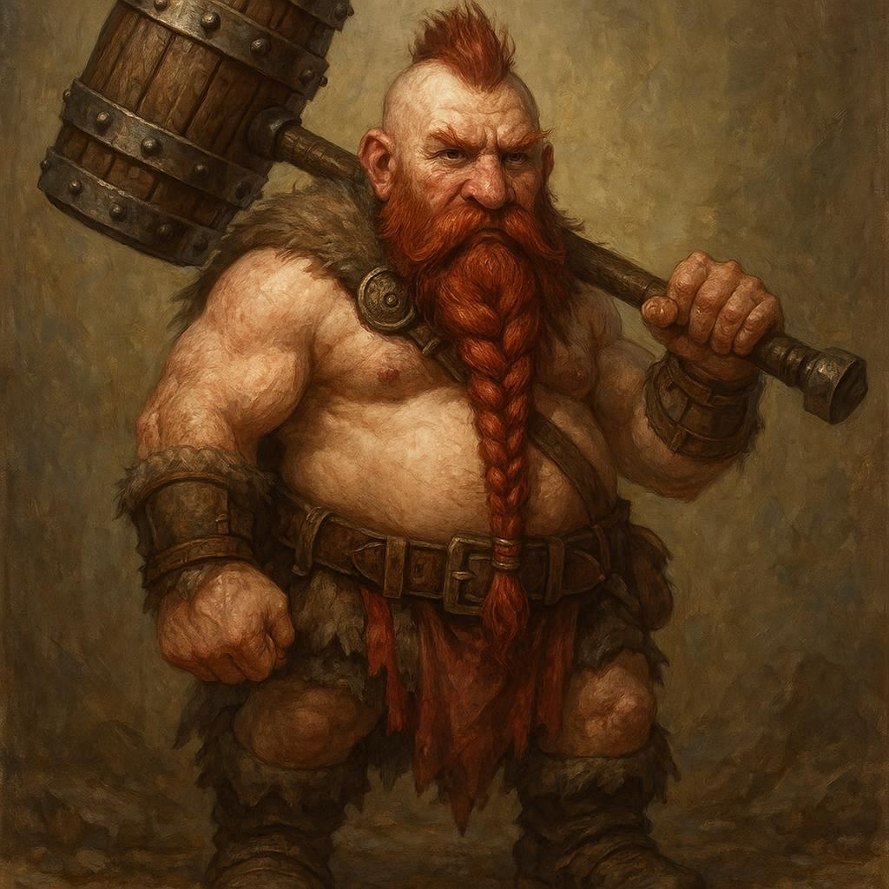

Active
Bugbear · Ranger (Fey Wanderer)
Gu Reed
formerly known as Bilbus Elderberry · "The Glitter King"
A reformed smuggler who built an empire in hidden caves and lost it to betrayal. Revived by a mysterious fey entity, he spent years in disguise before shedding the alias and returning to himself. Two horns have since grown from his head — an unexplained side effect of resurrection. He moves through the world with the confidence of someone who has survived everything thrown at him and expects to survive whatever comes next.
Alignment
Lawful Neutral
Religion
The Feywild
Languages
Common, Goblin, Sylvan, Undercommon
Affiliation
The Glittering Smugglers
Personal Quest
Track down Flingus Bogbelly — the former enforcer who beat him nearly to death, looted his fey-touched cavern, and triggered the event that changed everything. Understand why he was revived. And repay whatever debt he owes the entity that saved him.

Active
Tiefling · Warlock — Fiend (Pact of the Tome)
Lando Ashveil
"the flamebearer"
Born in hiding in the frozen north, his parents fugitives from powers that eventually found them. After their deaths, Lando survived alone until a blizzard drove him into a cave — where a dying fiend named Asharoth offered a desperate bargain. Years of vigilante justice followed, fuelled by vengeance and growing infernal power. He carries a blind left eye scarred across his face, an Infernal Tome, and a Silver dragon egg bonded to him before he even knew it existed.
Alignment
Lawful Neutral
Patron
Asharoth (Fiend)
Languages
Common, Infernal, Northern
Bond
Silver Dragon Egg
Personal Quest
Find the surviving members of the Black Banner mercenary company — the men hired to kill his family. The Coin & Corpse tavern in Havilar's Crossing is the lead. Meanwhile, decide what to do when Asharoth eventually asks for more than guilty blood.

Active
Goblin · Bard (College of Lore)
Grog Fullmug
"Song-Smasher"
3'4" of chaos, ale-stained ambition, and a grin too wide for his face. Raised in Grimblethorn — a rare goblin village that prized old songs and history — Grog was separated from his parents at age six when cloaked figures in dark green raided the village looking for something. He escaped through a smuggler's tunnel with two heirlooms: a dented brass tankard and a torn journal page with sheet music on one side and a partial map on the other. His drunken bard persona is a mask. He's been looking for those green-robed figures ever since.
Alignment
Chaotic Neutral
Languages
Common, Goblin
Heirlooms
Brass Tankard, Torn Journal Page
Origin
Grimblethorn, Red Mountains
Personal Quest
Identify the green-robed Songseekers who destroyed Grimblethorn. Piece together the Last Song — the ancient, world-shaking melody his family were the last guardians of. Understand what his parents meant by: "You were never meant to stay hidden."

Separated — Havilar's Crossing
Dwarf · Barbarian (Path of the Zealot)
Balinor
"Kegbreaker" · "The Drinking Fury"
A 126-year-old mercenary with a mohawk, a beer belly, a reinforced keg for a weapon, and a legend about falling into cursed wine as a child. He joined the caravan for coin. What he didn't plan on was touching a Scion Flame in Willowfen and receiving a vision of the God-King himself. The flame spread up his arm to his neck. His eyes went gold. Havilar asked him if he accepted Justice. He said yes. Now he's in Havilar's Crossing in the hands of the Imperial Seers — and no one is sure what happens next.
Alignment
Chaotic Neutral
Religion
Light of Dawn (converted)
Weapon
The Kegmaul
Current location
Havilar's Crossing
Unresolved Thread
Havilar told him "Come to my Crossing." He's there now. What the God-King's vision means for a mercenary who didn't even believe in anything a week ago — that's what the Imperial Seers are trying to figure out.